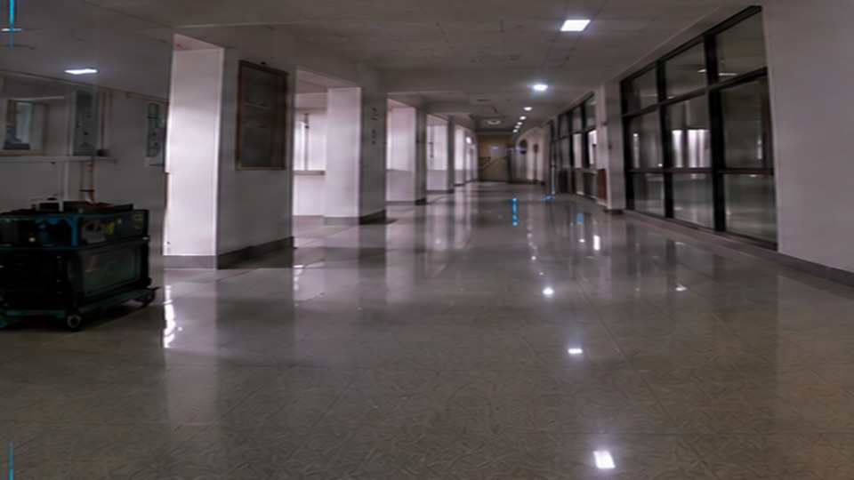

{% load static %}
<!doctype html>
<html lang="zh-CN">
<head>
  <meta charset="UTF-8" />
  <meta name="viewport" content="width=device-width, initial-scale=1.0" />
  <meta name="color-scheme" content="dark" />
  <title>智能车上位机系统</title>
  <link rel="stylesheet" href="{% static 'styles.css' %}" />
</head>
<body>
  <div class="app-shell">
    <header class="topbar">
      <div class="topbar-decoration topbar-decoration-left" aria-hidden="true">
        <span></span><span></span><span></span><span></span>
      </div>
      <div class="system-title-wrap">
        <div class="title-wing title-wing-left" aria-hidden="true"></div>
        <h1>智能车上位机系统</h1>
        <div class="title-wing title-wing-right" aria-hidden="true"></div>
      </div>
      <div class="system-status">
        <div class="connection-block">
          <span class="status-label">连接状态：</span>
          <span id="connectionText" class="status-value is-online">已连接</span>
        </div>
        <svg class="status-icon wifi-icon" viewBox="0 0 24 24" aria-hidden="true">
          <path d="M3 8.5a14 14 0 0 1 18 0M6.3 12a9 9 0 0 1 11.4 0M9.6 15.4a4 4 0 0 1 4.8 0M12 19h.01" />
        </svg>
        <svg class="status-icon clock-icon" viewBox="0 0 24 24" aria-hidden="true">
          <circle cx="12" cy="12" r="8.5" />
          <path d="M12 7.5V12l3.2 1.8" />
        </svg>
        <time id="systemClock">--:--:--</time>
      </div>
    </header>
    <main class="dashboard-grid">
      <aside class="tech-panel map-list-panel">
        <div class="panel-glow" aria-hidden="true"></div>
        <div class="panel-heading">
          <span class="heading-bar"></span>
          <h2>导航图列表</h2>
          <span class="heading-lines" aria-hidden="true"></span>
        </div>
        <div id="mapList" class="map-list" role="listbox" aria-label="导航地图列表"></div>
        <div class="panel-footer-decoration" aria-hidden="true"></div>
      </aside>
      <section class="tech-panel map-panel" aria-label="地图操作区域">
        <div class="panel-glow" aria-hidden="true"></div>
        <div class="map-stage">
          <nav class="map-toolbar" aria-label="地图工具栏">
            <button class="tool-button" data-tool="select" title="选择标记" aria-label="选择标记">
              <svg viewBox="0 0 24 24"><path d="M5 3.5 18.5 14l-6.3 1.2-3.3 5.3z" /></svg>
            </button>
            <button class="tool-button" data-tool="pan" title="拖动地图" aria-label="拖动地图">
              <svg viewBox="0 0 24 24"><path d="M12 2v20M2 12h20M12 2l-2.5 3M12 2l2.5 3M12 22l-2.5-3M12 22l2.5-3M2 12l3-2.5M2 12l3 2.5M22 12l-3-2.5M22 12l-3 2.5" /></svg>
            </button>
            <button class="tool-button is-active" data-tool="point" title="添加导航点" aria-label="添加导航点">
              <svg viewBox="0 0 24 24"><path d="M12 21s6-5.4 6-11a6 6 0 1 0-12 0c0 5.6 6 11 6 11Z" /><circle cx="12" cy="10" r="2" /></svg>
            </button>
            <button class="tool-button" id="clearMarkersButton" title="清除全部标记" aria-label="清除全部标记">
              <svg viewBox="0 0 24 24"><path d="M4.5 7h15M9 4.5h6l1 2.5H8zM7 7l.8 13h8.4L17 7M10 10.5v6M14 10.5v6" /></svg>
            </button>
            <button class="tool-button" id="undoMarkerButton" title="撤销上一个标记" aria-label="撤销上一个标记">
              <svg viewBox="0 0 24 24"><path d="M9 7H5v-4M5.4 7A8 8 0 1 1 4 14" /></svg>
            </button>
            <button class="tool-button" id="fitMapButton" title="复位地图" aria-label="复位地图">
              <svg viewBox="0 0 24 24"><circle cx="12" cy="12" r="7" /><circle cx="12" cy="12" r="2" /><path d="M12 2v3M12 19v3M2 12h3M19 12h3" /></svg>
            </button>
          </nav>
          <div class="map-canvas-wrap" id="mapCanvasWrap">
            <canvas id="mapCanvas" aria-label="可交互导航地图"></canvas>
            <div class="map-name-badge">
              <span class="badge-dot"></span>
              <span id="currentMapName">未选择地图</span>
            </div>
            <div id="mapLoading" class="loading-overlay is-hidden">
              <div class="loading-spinner"></div>
              <span>地图加载中</span>
            </div>
            <div class="map-hint" id="mapHint">单击地图添加导航点，滚轮缩放</div>
          </div>
        </div>
        <footer class="map-statusbar">
          <div class="status-item coordinate-item">
            <span class="status-key">相对坐标：</span>
            <span>X:</span><strong id="relativeX">--</strong>
            <span>Y:</span><strong id="relativeY">--</strong>
          </div>
          <span class="status-divider"></span>
          <div class="status-item">
            <span class="status-key">缩放：</span>
            <strong id="zoomValue">100%</strong>
          </div>
          <span class="status-divider"></span>
          <div class="status-item">
            <span class="status-key">分辨率：</span>
            <strong id="resolutionValue">0.05 m/pix</strong>
          </div>
        </footer>
      </section>
      <aside class="tech-panel camera-panel">
        <div class="panel-glow" aria-hidden="true"></div>
        <div class="camera-heading">
          <h2>摄像头实时画面</h2>
          <div class="live-indicator"><span></span><b>LIVE</b></div>
        </div>
        <div class="video-frame-shell">
          
          <div class="video-scanline" aria-hidden="true"></div>
          <div class="video-corner corner-tl" aria-hidden="true"></div>
          <div class="video-corner corner-tr" aria-hidden="true"></div>
          <div class="video-corner corner-bl" aria-hidden="true"></div>
          <div class="video-corner corner-br" aria-hidden="true"></div>
          <div class="video-metadata">
            <span id="videoResolution">960 × 540</span>
            <span id="videoFps">10.0 FPS</span>
          </div>
        </div>
        <div class="action-buttons">
          <button class="action-button mapping-button" data-action="mapping">
            <svg viewBox="0 0 24 24"><path d="m4 6 5-2 6 2 5-2v14l-5 2-6-2-5 2zM9 4v14M15 6v14" /></svg>
            <span>建图开始</span>
          </button>
          <button class="action-button save-button" data-action="save">
            <svg viewBox="0 0 24 24"><path d="M5 3.5h12l2 2V20H5zM8 3.5v6h8v-6M8 20v-7h8v7" /></svg>
            <span>保存地图</span>
          </button>
          <button class="action-button navigation-button" data-action="navigate">
            <svg viewBox="0 0 24 24"><path d="m20.5 3.5-7 17-2.3-7.7-7.7-2.3zM11.2 12.8l3-3" /></svg>
            <span>启动导航</span>
          </button>
        </div>
        <div class="camera-status-strip">
          <span>WebSocket</span>
          <strong id="wsStatusText">模拟连接</strong>
          <i></i>
          <span>刷新周期</span>
          <strong id="frameIntervalText">100 ms</strong>
        </div>
      </aside>
    </main>
  </div>
  <div id="toastContainer" class="toast-container" aria-live="polite"></div>
  <script src="{% static 'config.js' %}"></script>
  <script src="{% static 'app.js' %}"></script>
</body>
</html>
